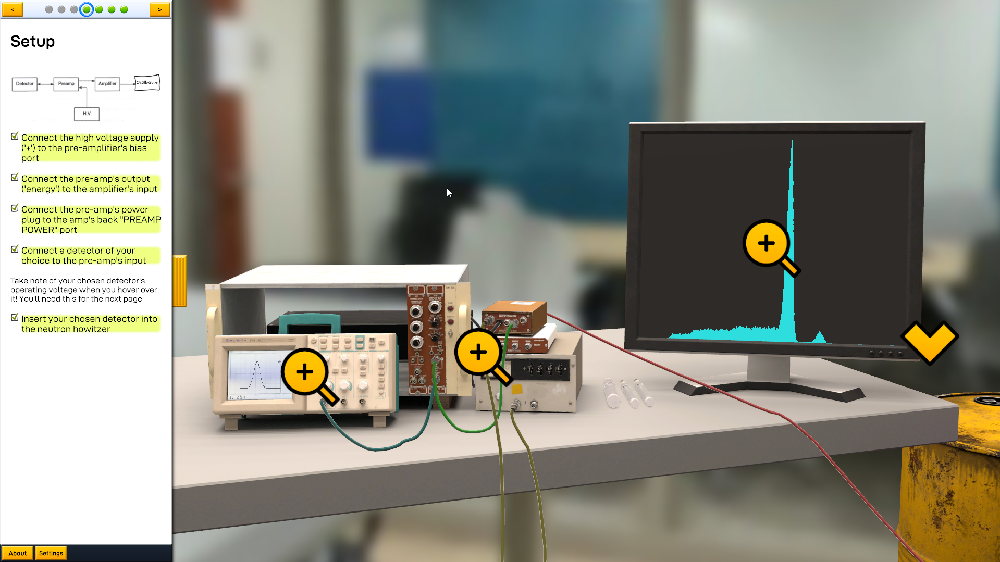
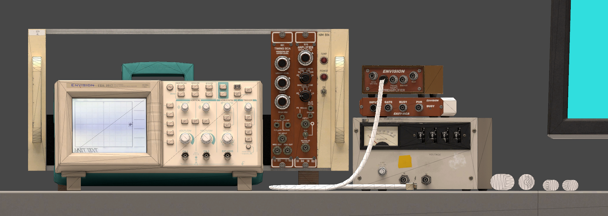

nuclear engineering
virtual education
A simulated lab space for Purdue University's Nuclear Engineering department.


This is a virtual lab project led by Purdue University Prof. Stylianos Chatzidakis. It increases accessibility to curriculum-necessary radiation spectrum analysis equipment with a virtual web-based lab space. Built on Unity, I'm responsible for most visuals and scripting.
I collaborated with Prof. Chatzidakis and his team to model the equipment in code. Inputs & outputs are fully simulated and everything interacts realistically. The program is therefore a flexible 'sandbox' and will deal with any arrangements the user may configure. This modularity also makes it easy to add new equipment in the future.
A lot of care went into the visuals and user interaction to teach students how to properly use the equipment. Users don't interface with 2D abstractions of the equipment but instead press buttons, flip switches, and turn knobs on accurate 3D representations. I decorated the tools with the same labels, stickers, stains, and scratches that grace their real counterparts.
The program runs in a browser and is optimized for even low-spec devices such as Chromebooks and tablets. There are max 25k triangles rendered in 22 draw events. The program's load size is shy of 50mb.

Because of its modular nature, I am continuing to collaborate with Prof. Chatzidakis and his team to expand the lab to include more tools and cover more of his curriculum. I am also working on detailed documentation so that other developers can build off of it in the future.

While a lot of the lab is bespoke, including its cable system, object interaction, and UI, I still leveraged a few third party assets. The cable dynamics come from Obi Rope, and the radioactive source container comes from PolyHaven. The lab is built in Unity and most of the visuals were done in Blender, Substance Painter, Marmoset Toolbag, and Affinity Designer.
Completed late 2023